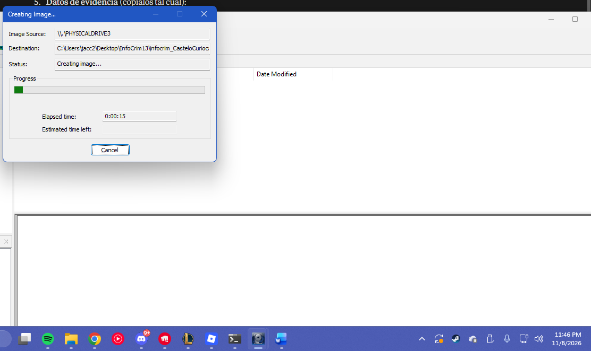
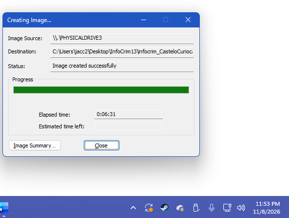
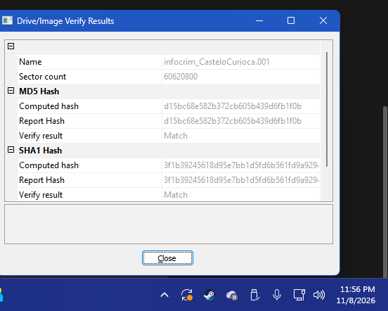

1. Ficha Técnica de la Actividad
Herramienta
FTK Imager (AccessData / Exterro)
Número de Caso
InfoCrim-01_21.11.2023
Evidencia
ADATA USB Flash Drive · 29,600 MB · \\.\PHYSICALDRIVE3
Formato de Imagen
Raw (dd), 20 segmentos
Objetivo
Adquirir una copia exacta de la evidencia digital sin modificar el original, para su posterior análisis en el caso de fraude bancario.
2. Fundamento: Adquisición Forense
La adquisición es la primera de las cinco fases del análisis forense digital (adquisición, preservación, análisis, documentación y presentación). Consiste en obtener una copia bit a bit del dispositivo sospechoso sin modificar ningún dato, de modo que el análisis se realice siempre sobre la copia y la evidencia original quede intacta. La integridad se demuestra con funciones hash: si el hash de la imagen coincide con el de la fuente, la copia es idéntica.
3. Procedimiento Paso a Paso
Preparación
Se instaló FTK Imager y se conectó la memoria USB que funcionó como evidencia. Conforme a la indicación de la práctica, no se utilizó bloqueador de escritura.
Selección de la Fuente
Desde File se eligió Create Disk Image…, la fuente Physical Drive y el dispositivo \\.\PHYSICALDRIVE3.
Destino y Datos del Caso
Se agregó el destino en formato Raw (dd) y se capturaron los datos del caso: número de caso, descripción, examinador y notas. La imagen se guardó en la carpeta InfoCrim13 con el nombre infocrim_CasteloCurioca.
Adquisición
Se inició el proceso con Start. FTK Imager copió los 60,620,800 sectores de la unidad.

Verificación de Integridad
La imagen se creó exitosamente en 6 minutos con 31 segundos y los hashes MD5 y SHA-1 de la imagen coincidieron con los de la fuente (verified).


Verificación: MD5 y SHA-1 calculados vs. reporte, resultado Match.
4. Resultados de la Adquisición
Inicio / Término
23:45:49 → 23:52:20
Tiempo Transcurrido
0:06:31
Sectores Copiados
60,620,800
Archivos Generados
21 (20 segmentos .001–.020 + 1 .txt)
Hash MD5
d15bc68e582b372cb605b439d6fb1f0b
Hash SHA-1
3f1b39245618d95e7bb1d5fd6b561fd9a929cbaa
5. Raw (dd)
Formato crudo que almacena una copia bit a bit, sector por sector, sin compresión ni metadatos incrustados. Su tamaño es igual al del dispositivo y casi cualquier herramienta forense puede abrirlo. Los datos del caso y los hashes se guardan aparte, en el archivo .txt.
6. E01 y SMART
E01 (Expert Witness Format de EnCase) comprime la imagen y guarda dentro del archivo los metadatos del caso, el hash y sumas de verificación por bloques. SMART (ASR Data, extensión .s01) es de la misma familia, pero más antiguo y menos compatible; E01 es el estándar de facto.
7. Evidencia Documental Original
Consulta el reporte de la Actividad 16 con el procedimiento, las respuestas y los resultados de la adquisición.
Descargar Documento (PDF)